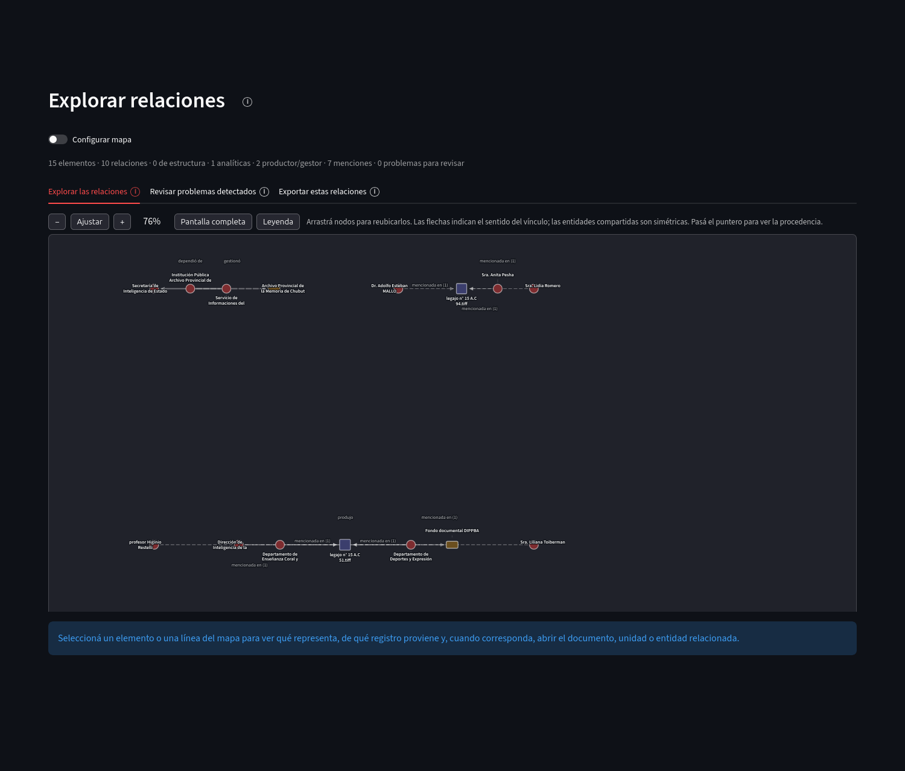
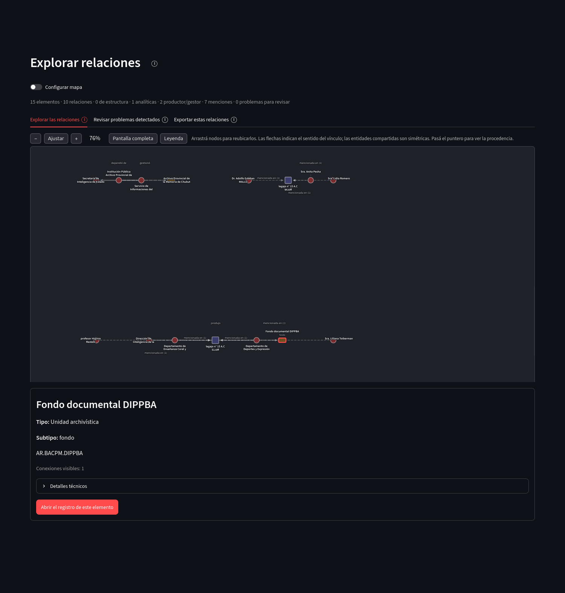

Exploración y descripción
Explorar relaciones
El grafo reúne conexiones ya registradas en el proyecto. Los nodos pueden representar entidades, unidades archivísticas, documentos o partes internas de documentos. Las líneas representan relaciones de estructura, roles de producción o gestión, menciones y relaciones analíticas.
Mapa de relaciones
El mapa puede filtrarse y ajustarse al área visible. La dirección de una flecha expresa el sentido del vínculo; las formas de los nodos ayudan a distinguir tipos de elemento además del color. Las relaciones estructurales pueden ocultarse cuando se necesita concentrar la vista en conexiones analíticas o de procedencia.
{kind=link}

Abrir captura completa
Detalle de elementos
Seleccionar un nodo o una línea abre un panel de detalle debajo del grafo. El panel identifica el tipo de elemento, su registro y las conexiones visibles, y ofrece navegación hacia la ficha, unidad o documento cuando corresponde.
{kind=link}

Abrir captura completa
Revisión de problemas detectados
Esta pestaña separa problemas de menciones que necesitan una decisión de otros problemas de consistencia entre relaciones. Las alertas no cambian datos por sí solas; cuando existe una reparación segura o una decisión necesaria, la acción se presenta en el mismo contexto.
Revisar problemas detectados presenta únicamente alertas vigentes. Si no existen menciones o relaciones que requieran una decisión, la pestaña muestra ese estado sin crear tareas artificiales.
Exportación de relaciones
El grafo visible puede exportarse en JSON, CSV y GraphML. GraphML es un formato de intercambio para herramientas de análisis de redes como Gephi o Cytoscape.
Exportar estas relaciones trabaja sobre el conjunto que está visible con los filtros actuales. De este modo, un archivo de relaciones puede representar el mapa completo o una selección acotada del proyecto.